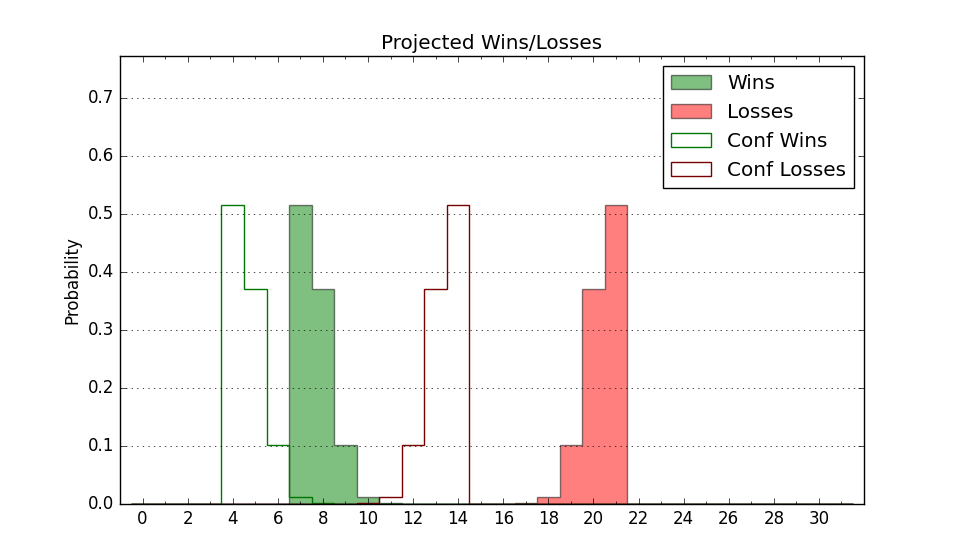

| Home | Game Probabilities | Conferences | Preseason Predictions | Odds Charts | NCAA Tournament |
| City: | Flagstaff, Arizona | |
| Conference: | Big Sky (9th)
| |
| Record: | 4-10 (Conf) 7-17 (Overall) | |
| Ratings: | Comp.: -12.2 (293rd) Net: -12.1 (293rd) Off: 104.9 (241st) Def: 117.0 (311th) SoR: 0.0 (108th) |
| Remaining | ||||||
|---|---|---|---|---|---|---|
| Date | Opponent | Win Prob | Pred. | |||
| 2/21 | @ Northern Colorado (134) | 9.9% | L 67-81 | |||
| 2/26 | @ Idaho (139) | 11.1% | L 65-79 | |||
| 2/28 | @ Eastern Washington (193) | 16.8% | L 69-80 | |||
| 3/2 | Montana St. (118) | 24.1% | L 66-73 | |||
| Previous | Game Score | |||||
| Date | Opponent | Win Prob | Result | Off | Def | Net |
| 11/3 | (N) Drake (191) | 26.9% | L 71-77 | -7.0 | 9.1 | 2.1 |
| 11/11 | @Arizona (3) | 0.3% | L 49-84 | -13.4 | 19.9 | 6.5 |
| 11/24 | Cal Poly (226) | 49.8% | W 93-87 | 6.1 | 4.4 | 10.6 |
| 11/26 | Southeast Missouri St. (236) | 52.1% | W 79-72 | 6.3 | 5.8 | 12.1 |
| 12/3 | South Dakota St. (175) | 37.3% | L 62-75 | -17.8 | 1.8 | -16.0 |
| 12/6 | @North Dakota St. (135) | 10.0% | L 68-69 | -2.8 | 25.6 | 22.8 |
| 12/9 | @Arizona St. (72) | 4.4% | L 48-73 | -23.4 | 16.3 | -7.1 |
| 12/13 | @San Diego (216) | 20.4% | L 69-78 | -0.6 | -0.3 | -0.9 |
| 12/18 | Southern Utah (285) | 62.9% | W 65-57 | -10.5 | 20.3 | 9.7 |
| 12/21 | @Incarnate Word (262) | 28.9% | L 66-90 | -12.5 | -16.2 | -28.7 |
| 1/1 | @Montana (160) | 13.9% | L 64-78 | 0.1 | 1.1 | 1.2 |
| 1/3 | @Montana St. (118) | 8.5% | L 68-77 | 6.7 | -5.8 | 0.9 |
| 1/8 | Weber St. (182) | 38.0% | L 65-78 | -6.9 | -9.7 | -16.7 |
| 1/10 | Idaho St. (192) | 40.5% | L 79-81 | 10.8 | -10.5 | 0.3 |
| 1/15 | @Sacramento St. (235) | 24.1% | L 69-83 | -4.1 | -8.6 | -12.6 |
| 1/17 | @Portland St. (133) | 9.8% | L 52-63 | -10.1 | 12.6 | 2.5 |
| 1/19 | Montana (160) | 35.4% | L 72-98 | 11.3 | -47.8 | -36.5 |
| 1/24 | Northern Colorado (134) | 27.3% | W 81-77 | 23.9 | -6.0 | 17.9 |
| 1/29 | Eastern Washington (193) | 40.7% | W 92-86 | 34.6 | -14.9 | 19.8 |
| 1/31 | Idaho (139) | 29.8% | L 62-79 | -11.0 | -6.5 | -17.4 |
| 2/5 | @Idaho St. (192) | 16.7% | W 79-73 | 27.3 | 0.1 | 27.5 |
| 2/7 | @Weber St. (182) | 15.3% | L 53-72 | -12.6 | -1.1 | -13.7 |
| 2/12 | Portland St. (133) | 27.0% | L 68-77 | 8.9 | -11.7 | -2.8 |
| 2/14 | Sacramento St. (235) | 52.0% | W 79-74 | 1.5 | 6.3 | 7.8 |
| Stats & Trends | |||||
|---|---|---|---|---|---|
| Current | Day | Week | Month | Season | |
| Composite | -12.2 | -0.0 | +0.2 | +0.4 | +2.1 |
| Comp Rank | 293 | -1 | -3 | -5 | +13 |
| Net Efficiency | -12.1 | -0.0 | +0.2 | +0.2 | -- |
| Net Rank | 293 | -1 | -4 | -9 | -- |
| Off Efficiency | 104.9 | -0.1 | +0.3 | +3.9 | -- |
| Off Rank | 241 | -2 | +5 | +51 | -- |
| Def Efficiency | 117.0 | +0.0 | -0.1 | -3.7 | -- |
| Def Rank | 311 | +1 | +2 | -42 | -- |
| SoS Rank | 173 | +1 | -16 | -14 | -- |
| Exp. Wins | 7.6 | -0.0 | +0.2 | +1.1 | -2.5 |
| Exp. Conf Wins | 4.6 | -0.0 | +0.2 | +1.1 | -2.3 |
| Conf Champ Prob | 0.0 | -- | -- | -- | -2.1 |

| Advanced Stats | ||
|---|---|---|
| Stat | Value | Rank |
| Off Eff FG % | 0.517 | 164 |
| Off Ast Ratio | 0.151 | 152 |
| Off ORB% | 0.242 | 338 |
| Off TO Rate | 0.149 | 202 |
| Off FT Ratio | 0.312 | 280 |
| Def Eff FG % | 0.553 | 308 |
| Def Ast Ratio | 0.156 | 252 |
| Def ORB% | 0.338 | 309 |
| Def TO Rate | 0.145 | 200 |
| Def FT Ratio | 0.334 | 147 |